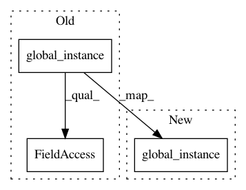

4cb3738e03de2fa2fb23a740caa904641a96b5f6,src/python/pants/process/subprocess.py,Factory,create,#Factory#,19
Before Change
options_scope = "subprocess"
def create(self):
options = self.global_instance().get_options()
return Subprocess(options.pants_subprocessdir)
def __init__(self, pants_subprocess_dir):
self._pants_subprocess_dir = pants_subprocess_dir
After Change
options_scope = "subprocess"
def create(self):
return Subprocess(self.global_instance().options.pants_subprocessdir)
def __init__(self, pants_subprocess_dir):
self._pants_subprocess_dir = pants_subprocess_dir
In pattern: SUPERPATTERN
Frequency: 7
Non-data size: 3
Instances
Project Name: pantsbuild/pants
Commit Name: 4cb3738e03de2fa2fb23a740caa904641a96b5f6
Time: 2020-07-28
Author: 14852634+Eric-Arellano@users.noreply.github.com
File Name: src/python/pants/process/subprocess.py
Class Name: Factory
Method Name: create
Project Name: pantsbuild/pants
Commit Name: bdf317dd7199e64f82ca627a2be5070e2dea82f1
Time: 2020-01-07
Author: dwagnerhall@twitter.com
File Name: src/python/pants/backend/jvm/tasks/scalafmt_task.py
Class Name: ScalafmtTask
Method Name: _resolve_conflicting_skip
Project Name: pantsbuild/pants
Commit Name: bdf317dd7199e64f82ca627a2be5070e2dea82f1
Time: 2020-01-07
Author: dwagnerhall@twitter.com
File Name: contrib/go/src/python/pants/contrib/go/tasks/go_fmt_task_base.py
Class Name: GoFmtTaskBase
Method Name: _resolve_conflicting_skip
Project Name: pantsbuild/pants
Commit Name: bdf317dd7199e64f82ca627a2be5070e2dea82f1
Time: 2020-01-07
Author: dwagnerhall@twitter.com
File Name: src/python/pants/backend/jvm/tasks/scalafix_task.py
Class Name: ScalafixTask
Method Name: _resolve_conflicting_skip
Project Name: pantsbuild/pants
Commit Name: bdf317dd7199e64f82ca627a2be5070e2dea82f1
Time: 2020-01-07
Author: dwagnerhall@twitter.com
File Name: contrib/googlejavaformat/src/python/pants/contrib/googlejavaformat/googlejavaformat.py
Class Name: GoogleJavaFormatBase
Method Name: _resolve_conflicting_skip
Project Name: pantsbuild/pants
Commit Name: bdf317dd7199e64f82ca627a2be5070e2dea82f1
Time: 2020-01-07
Author: dwagnerhall@twitter.com
File Name: contrib/python/src/python/pants/contrib/python/checks/tasks/checkstyle/checkstyle.py
Class Name: Checkstyle
Method Name: skip_execution
Project Name: pantsbuild/pants
Commit Name: bdf317dd7199e64f82ca627a2be5070e2dea82f1
Time: 2020-01-07
Author: dwagnerhall@twitter.com
File Name: src/python/pants/backend/python/tasks/isort_run.py
Class Name: IsortRun
Method Name: skip_execution